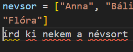
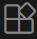
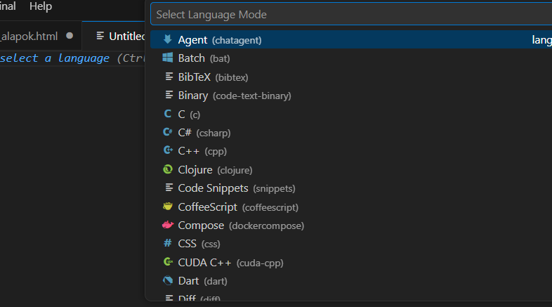
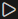
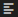
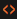
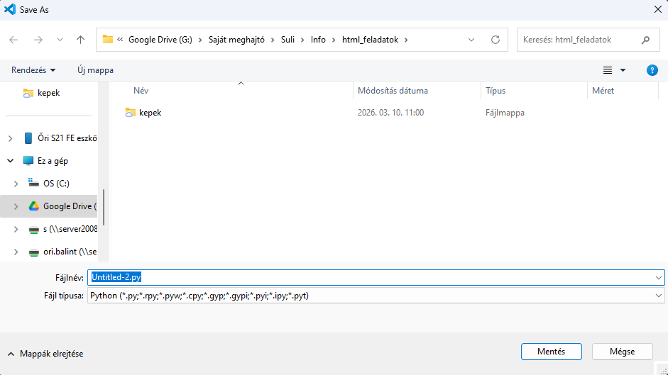
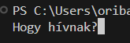

Ebben a dokumentumban a programozással, azon belül is a Python programozási nyelvvel kezdünk ismerkedni. Ezt sok hasonló követi majd még. A fontos részek összefoglalását így, a törzsanyagon kívüli extra tudnivalókat pedig így látjátok a szövegben.
A számítógépek elektronikusak, tehát működésükhöz elektromos áramot használnak. A műveletek és a be-, valamint kimenő adatok is elektromos jelek formájában tárolják és jelenítik meg, a bináris számrendszer használatával. A gyakorlatban ez azt jelenti, hogy az információt 0-k és 1-esek sorozataként tárolja és dolgozza fel. Itt a 0 a kikapcsolt, az 1 pedig a bekapcsolt állapotot jelenti, tehát mindkettő egy-egy logikai állapot. A gépi kód nullák és egyesek sorozata. A számítógép ezeket az utasításokat közvetlenül végre tudja hajtani. Ezek eredményeként jelennek meg dolgok a monitorodon, vagy szólalnak meg hangok a fejhallgatódban.
Mivel a gépi kódot az embereknek nagyon nehéz olvasni (ráadásul minden processzorarchitektúra más utasításkészleteket használ, tehát ugyanaz a parancs nem feltétlenül ugyanazt jelenti), ilyen programozással kevesen foglalkoznak. A gépi kódra ún. (úgynevezett) Assembly-nyelvek épülnek, amelyek még mindig szorosan kapcsolódnak a hardverhez, de már betűket is tartalmaznak, és összességében könnyebben olvashatók, mint a gépi kód.
Ezekre épülnek olyan programozási nyelvek, amelyek már magasabb absztrakciós szintűek.
10110000 00000101 00000100 00000011
MOV AL, 5 ADD AL, 3
x = 5 + 3A magas szintű programozási nyelvek hátránya, hogy a gép számára nem értelmezhetők az utasításaik. Pythonhoz, JavaScripthez, Rubyhoz stb. ezért egy fordító szoftverre van szükség.
A fordítás általában kétféleképpen történhet: vagy egyben lefordul a teljes program, és ez után indul el a futtatása, vagy soronként fordul le, azzal együtt, ahogyan fut. Mindkettőnek van előnye és hátránya; mit gondolsz, mi lehet az?
A Python kód futtatás előtt teljes egészében lefordul egy gépikód-szerű utasítássorozatra. Ennek ellenére a parancsok szigorú sorrendben követki egymást, balról jobbra, fentről lefelé.
A programozás nyelvtanát szintaxisnak nevezzük. Ez mondja meg, hogy hogyan kell írni egy-egy utasítást, hogyan tárolhatunk adatokat, vagy milyen karaktereket használhatunk a programban. Vannak olyan informatikai környezetek, ahol pl. nincs különbség a kis- és nagybetűk használata között, míg máshol van. Tudsz olyan példát mondani, ahol nem számít, hogy kis- vagy nagybetűvel írtunk-e valami?
A Python program valójában egy egyszerű szöveges fájl, a forráskód. Ez alapján készíti el a fordító a gépi kódot. A forráskód az angol nyelvben ismert kifejezéseket használ, könnyen olvasható. A Python beépített hibakeresője jól beazonosítja a problémákat, és segít azok kijavításában.
Az órán a VSCode alkalmazást használjuk a Python fájlok írására. Ugyanebben ismerkedünk meg majd a honlapszerkesztéssel is, így nem kell más felületet megtanulni.
Ha otthon is szeretnél gyakorolni, vagy csak szórakoznál egy kicsit a programozással, akkor telepítened kell a Pythont. Mivel ez a program nem része alapból a Windowsnak, először le kell tölteni. Ingyen hozzáférhető, van hivatalos weboldala, mindenképp azt használd! Az iskolai gépekre ezt már telepítettük. Ha telepíted, jelöld be az Add Python to Path jelölőt, hogy biztosan tudd majd futtatni a programjaidat!
Ha telepítetted a Pythont, érdemes ott is egy olyan szerkesztőt használni, ami segíti a munkádat. A VSCode ilyen:


) részre kattintva találod meg. Ha telepítetted a Microsoft-féle Python bővítményt, akkor kezdhetsz programozni!Az órán is fontos megnézni, hogy a Bővítmények (Extensions, ) részben a Microsoft-féle Python telepítve és engedélyezve van-e.
Ha felállítottuk a programozási környezetet, akkor elkezdhetjük a konkrét munkát. Nyisd meg a VSCode alkalmazást, ha még nem fut! Nyiss egy új fájlt a ctrl + n billentyűkombinációval! Válaszd ki, hogy milyen nyelvet szeretnél használni (jelenleg Python)!

Másold ki a lenti kódot, és illeszd be a ctrl + v billentyűkömbinációval!Szerinted mi lesz ennek a kódnak az eredménye?
print("Üdvözöllek a Python kódolás világában!")
print("Szia,", input("Hogy hívnak?"))
#Ez egy komment, amit a program nem vesz figyelembe.Ha lemásoltad és beillesztetted a kódot, akkor futtathatod a jobb felső sarokban levő gombbal:

. Ha nem látod ezt a gombot, akkor nézd meg, hogy választottál-e programnyelvet. Ezt az aktív fülön látszik: ha elmentettük, akkor a kiterjesztésen is, de ha még nem, akkor is a bal oldali ikonon. A
a sima szöveg, a a Python forráskód, a
pedig a HTML fájl, de természetesen más ikonok is vannak. Ha a formátumod jó, de nem látod a futtatás ikont, akkor nézd meg, hogy telepítetted-e a Python bővítményt.
Ha lefuttattad a programot, az eredmény az ablak alján, a terminálban jelenik meg.

Értelmezd a kapott eredményt! Egy kis segítség: a terminálban válaszolj a program kérdésére, és nyomj Enter-t!
A korábbiakban megtanultuk, hogy hogyan fut le a kód a számítógépen. Megnéztük, hogyan állítsuk be a programot, amelyet használunk. Lemásoltunk egy rövid kódot, megtippeltük, mit fog csinálni, és ellenőriztük. Most az előző óra végén végzett műveleteket nézzük meg részletesebben, háttértudást és gyakorlati tevékenységet is kapcsolunk hozzájuk.
A programozásban (mert amúgy a matematikában is) a függvények olyan dolgok, amik csinálnak valamit. A függvényeknek van argumentuma. Nézzük ezt a függvényt: y = 3x + 2! Jelölhetem máshogyan is: f(x) = 3x + 2. Oldjuk meg 1-re: f(1) = 3×1 + 2. Ebben a példában 1 volt a függvény argumentuma. A függvény definíciójában nem szerepelt az 1, helyette az x tagot láttuk. Ez a függvény paramétere. Egy függvénynek lehet több, vagy akár nulla paramétere is. A paraméterek változtatják a függvény viselkedését.
Matematikában a konstans (állandó) függvényeknek például nincs paramétere. Ha egy vízszintes vonalat szeretnék megjeleníteni, azt leírhatom az f(x) = 3 függvénnyel – persze, ha pont 3-nál szeretném a vonalat. Itt az x fölösleges, nem jelenik meg a függvény definíciójában, ezért a programozásban a legtöbb esetben el is hagyhatom. Írhatok annyit, hogy f() = 3.
A programozásban ilyen függvények pl. az alkalmazást bezáró függvények. Ezek a függvények mindig csak egyféleképpen működhetnek, nem befolyásolja őket egy argumentum sem.
print(). Ezzel a terminálra írathatunk ki adatokat. Nem ad hibát, ha nem adunk meg egyetlen argumentumot sem, de ekkor nem is ír ki semmit. Valamit azért mégis... Mit is? Próbáld ki a függvényt! VSCode-ba add meg a print() függvény argumentumának a következőket, egymás után, és mindig futtasd a programot, hogy lásd az eredményt! "Szia"
Szia
3+5
"3+5"
Trueprint() függvény
eredmény: argumentumok kiírása a terminálra
argumentumok minimális száma: 0*
argumentumok maximális száma: végtelen
visszaadott adattípus: None
kulcsszavas argumentumok: end (a végére kerülő karakterek), sep (több argumentum esetén az azok közé kerülő karakterek)
input(). Ez, a nevének megfelelően, felhasználói adatbevitelt tesz lehetővé. input() függvény
eredmény: felhasználói adatbevitel visszaadása
argumentumok minimális száma: 0
argumentumok maximális száma: 1
visszaadott adattípus: string
Ha a felhasználótól a nevét szeretnénk megtudni, akkor használhatjuk az input("Hogy hívnak?") kódot.
Ugyanezt az eredményt adja, de fölösleges plusz sorokkal, ha print() paranccsal íratjuk ki a kérdést, majd ez után teszünk egy input() függvényt, argumentum nélkül.
Az input() függvény mindig szöveget ad vissza, amit a Python string-ként nevez. Később majd látjuk, hogy miért így hívja.
Az input függvény mindig felhasználói bevitelt vár. Arra is használható, ha meg akarjuk állítani a programot egy kicsit. Ilyenkor nem használjuk fel a bevitt adatokat, a promptban pedig szerepelhet ennyi: "Nyomj Entert a továbblépéshez!".
print(❤️)print(3.1415)input("Mi a kedvenc színed?")print("Szia!")
input("Hogy hívnak?")
print("Örülök, hogy megismerhetlek!")Az operátorok egy vagy több adaton (hivatalosan: operanduson, amely érték vagy változó is lehet – ezekről többet később!) műveleteket hajtanak végre. Az operátorok gyakran új értéket eredményeznek.
Az operátorokat több csoportba lehet sorolni. A Pythonban leggyakrabban használt operátorokat a lenti táblázatok foglalják össze. Más programozási nyelvek más operátorokat is használhatnak. C++-ban pl. a // nem használható operátorként, mert itt ez kommentet jelöl. C++-ban és JavaScriptben létezik a ++ és a -- operátor, amely eggyel növeli vagy csökkenti a változók értékét.
| operátor | funkció |
|---|---|
| + | két érték összeadása vagy konkatenálása (lásd később!) |
| - | kivonás |
| * | szorzás |
| / | osztás (lebegőpontos osztás, vagyis maradék nélküli) |
| // | maradékos osztás (egészrész) |
| % | osztás utáni maradék |
| ** | hatványra emelés |
| operátor | funkció |
|---|---|
| == | egyenlő |
| != | nem egyenlő |
| < | kisebb |
| > | nagyobb |
| <= | kisebb vagy egyenlő |
| >= | nagyobb vagy egyenlő |
| operátor | funkció |
|---|---|
| and | logikai és: akkor ad igazat, ha mindkét oldalán szereplő érték igaz |
| or | logikai vagy: akkor ad igazat, ha legalább az egyik oldalán szereplő érték igaz |
| not | tagadás: megfordítja az utána következő állítást; ha az igaz lenne, hamisat ad, és fordítva |
| operátor | funkció |
|---|---|
| = | "legyen", érték hozzárendelése |
Értékadó operátornak tekinthető még sok kevert operátor. Amiket én kevert operátornak nevezek, egy aritmetikai és az értéket hozzárendelő operátorból állnak. Konkrétan az összes aritmetikai operátorral lehet ilyet csinálni. A += operátor például a bal oldali kifejezés értékéhez hozzáadja a jobb oldalit. A művelet után a bal oldali kifejezés értéke az összeg lesz. A *= ugyanezt szorzással csinálja.
Rengeteg további operátor létezik, amelyekkel ritkábban találkozunk.
| operátor | funkció | & | bitműveleti és; minden egyes bit akkor lesz 1, ha mind a két oldalán szereplő kifejezés adott helyiértéken álló bitje 1 |
|---|---|
| | | bitműveleti vagy: minden egyes bit akkor lesz 1, ha a két oldalán szereplő kifejezés legalább egyikének 1-es van az adott helyiértékén |
| ^ | XOR, kizáró vagy: minden bit akkor lesz 1, ha a két oldalán álló kifejezések adott helyiértékén különböző értékek vannak |
| ~ | bitenkénti negáció: minden bit megfordul (0 helyett 1 és fordítva) |
| << | balra tolás: minden bit egy helyiértéket mozdul balra, a legkisebb helyiértéken 0 jelenik meg. Milyen matematikai műveletnek felel meg? |
| >> | jobbra tolás: minden bit egy helyiértéket mozdul jobbra, a legkisebb helyiértéken tárolt bit elvész. Milyen matematikai műveletnek felel ez meg? |
| operátor | funkció | példa és eredmény |
|---|---|---|
| in | benne van | |
| not in | nincs benne | |
| is | ugyanaz az objektum | |
A Python kód különböző adattípusokat ismer. Minden adattípus megadott módon viselkedik. Ugyanaz az operátor például különböző eredményeket adhat eltérő típusok esetén.
| típus | angol név | magyar név | jellemzők |
|---|---|---|---|
| int | integer | egész szám | egész számokat tárol |
| float | floating point number | lebegőpontos törtszám | tizedes törteket tárol, tizedesponttal elválasztva |
| str | string | karakterlánc | szöveget tárol, idézőjelek közé téve |
| bool | Boolean | logikai adat | igaz (True) vagy hamis (False) értéket tárol, mindössze egy biten |
print(type("Szia!"))
<class 'str'>print(type(True))
<class= 'bool'>print(type(5.5))
<class= 'float'>A fenti adattípusokat a Python mind különböző színnel jelöli a szerkesztőkben. A konkrét színek a beállításoktól függnek, de a lényeg, hogy egyértelműen elkülönülnek egymástól. Oldalt három példa látszik, az oldal készítésekor az én VSCode-omon ezek a színek vannak beállítva. Az adatok típusát a type függvénnyel nézhetjük meg.
Ha a bal oldali módon kiíratjuk ezeknek az adatoknak a típusát, akkor a <> karakterek közti kimenetet kapjuk a terminálon.
Pythonban egyszerűen csak leírjuk a változó nevét, majd értéket rendelünk hozzá. Az értékadást az = operátorral végezzük.
A változó bármilyen adattípust tartalmazhat, és akár egy másik változó értékét is hozzárendelhetem.
Akár még egy függvényt is eltárolhatok egy változóban. Ilyet például akkor lehet érdemes, ha egy függvényt nagyon sokszor használunk a programban, és hosszú a neve.
x = 5y = "Python"
z = ya = print
a(3 + 5)
a(3 + 5)
8
8Létrehozás után a változókat ugyanúgy használhatjuk, mint ha maguk a nyers adatok lennének a helyükön. Ezért fontos tudni, hogy a Python a háttérben hogyan kezeli az adattípusokat.
nev = "Bálint"
print(nev)
'Bálint'Az alacsonyabb szintű programozási nyelvek egyik jellemzője, hogy ott a programozás közben meg kell adnunk, hogy milyen típusú változót készítünk. Pythonban a fordító ezt automatikusan kezeli, ezért nekünk nem kell foglalkozni vele, de tudni kell róla, mert hibához vezethet, ha valamit nem jól csinálunk.
A legfontosabb, hogy a változót a kódban az előtt kell létrehozni, hogy először használnánk. Szerencsére a szerkesztők valahogyan jelzik, a VSCode például aláhúzással, ha nem jó sorrendben van ez a kettő.
A változók nevének betűvel vagy a _ karakterrel kell kezdődnie. Tartalmazhatnak számot is, de az nem állhat a legelején. Helyes tehát a nev2 elnevezés, de a 2nev nem.
print(x)
x = 2
hibát ad!
A változók neve nem tartalmazhat speciális karaktereket, pl. idézőjelet, pontot, szóközt vagy kötőjelet. Az ékezetes karaktereket is érdemes elkerülni, mert más nyelvű gépeken nem biztos, hogy hibátlanul lefut a program.
Néhány kulcsszó fenn van tartva Pythonban, ezeket sem használhatjuk. Ilyenek pl. a print, if, True, input és még nagyon sok, amikkel majd találkozunk. Ez logikus: ha valamire már használjuk, akkor egy másik dologra nem lehet még egyszer.
A Python különbséget tesz a kis- és nagybetűk között, a név, Név, NÉV, NéV tehát 4 különböző változót jelent. Nyilván nem célszerű így elnevezni a változókat. Érdemes olyan neveket adni, amelyek leírók, tehát segítenek nekem abban, hogy tudjam, mit is tárolok az adott változóban. Ha több szóból álló nevet szeretnénk használni, akkor érdemes a szavak közé _ karaktereket tenni (Shift + -): saját név helyett sajat_nev.
Az első részben egy gyors kis tesztet találtok beágyazva. A név miatt ne aggódjatok, csak azért vagyok rá kíváncsi, hogy lássam, hogy ki hogy áll, és kivel kell még gyakorolni.
Szia világ!Szia világ!
print("Szia világ!")print(3 * 8)print(2026 % 12)print((3 / 5) / (9 / 7))nev = input("Hogy hívnak?")
print("Szia,", nev)evszam = int(input("Melyik évben születtél?""))
print("2026-ban", 2026 - evszam, "éves leszel!")Volt már szó a tárolt adatok típusáról. Az eddigi képet terjesztjük ki egy kicsit a következő részben. Megismerkedünk az eddig tárgyalt egyszerű adattípusok mellett összetett adattípusokkal is. Megnézzük, mikor melyiket érdemes használni, és azt is, milyen tulajdonságaik segítik a programozókat.
tuple, set